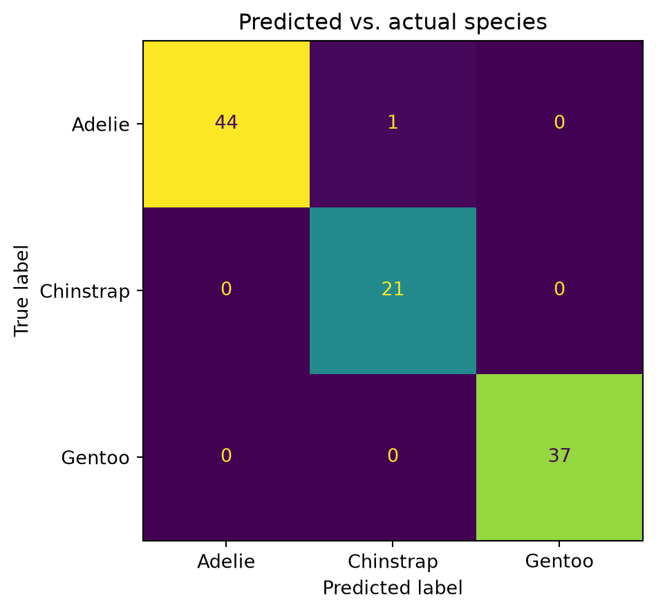

Classifying penguin species from their measurements
Training a random forest to tell penguin species apart from bill and flipper measurements, in Python.
Author
Harshil Sharma
Published
September 25, 2026
Data: Palmer Penguins, Palmer Station Antarctica LTER, released under a CC0 1.0 licence. Citation: Horst AM, Hill AP, Gorman KB (2020). palmerpenguins R package version 0.1.1. This post uses the palmerpenguins Python package, which bundles the same dataset, so no download or network access is needed to reproduce it.
The companion R post asks how body mass relates to a penguin’s other measurements. Here I ask a different question of the same data: given only a penguin’s bill and flipper measurements, how well can a model tell the three species apart?
import sysimport pandas as pdimport numpy as npimport matplotlib.pyplot as pltfrom palmerpenguins import load_penguinsfrom sklearn.model_selection import train_test_splitfrom sklearn.ensemble import RandomForestClassifierfrom sklearn.metrics import accuracy_score, confusion_matrix, ConfusionMatrixDisplayprint(sys.executable)
Printing sys.executable confirms the kernel is running inside this project’s .venv, which is what makes the environment reproducible from uv.lock rather than whatever Python happens to be on a grader’s PATH.
Rows before dropping missing values: 344
Rows after: 342
species
Adelie 151
Gentoo 123
Chinstrap 68
Name: count, dtype: int64
I keep only the four numeric measurements as features and drop rows missing any of them or the species label. That leaves a moderately imbalanced but workable set of three classes.
A 200-tree random forest, trained on 70% of the data and evaluated on the held-out 30%, already separates the species almost perfectly from just four measurements.
fig, ax = plt.subplots(figsize=(5, 5))ConfusionMatrixDisplay.from_predictions( y_test, y_pred, labels=clf.classes_, ax=ax, colorbar=False)ax.set_title("Predicted vs. actual species")plt.tight_layout()plt.show()

Figure 1: Confusion matrix for species predictions on the held-out test set.
Figure 2: Relative importance of each measurement in the random forest.
What I found
The classifier reaches 99.0% accuracy on the test set, with almost all of the (rare) confusion happening between Adelie and Chinstrap, the two species that overlap most in body size. Flipper length and bill length dominate the model’s decisions, while bill depth and body mass contribute comparatively little on top of them. That lines up with the biology: bill length is the single most species-specific measurement in this dataset, since Gentoo and Chinstrap bills differ from Adelie’s far more than their depths do.